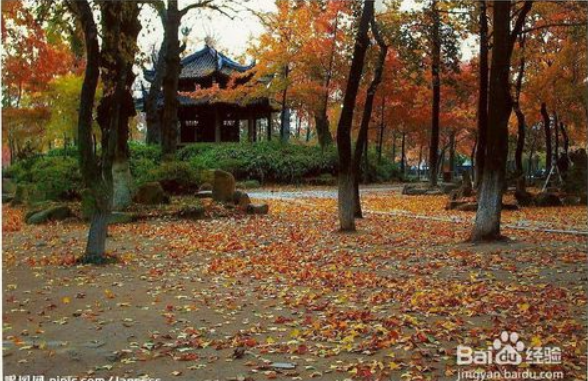

木渎位于苏州城西，太湖之滨，是江南著名古镇。境内风光秀丽，物产丰饶，又恰在天平、灵岩、狮山、七子等吴中名山环抱之中，故有“聚宝盆”之称。 木渎四周群山拱峙，又毗邻太湖，既得真山真水之趣，又具小桥流水之幽，更有私家园林、名人故居等众多的人文古迹，因而，木渎景区名列太湖风景区十三个景区之首。作为中国唯一的园林古镇，木渎在明清时有私家园林 30 多处，迄今仍保留了 10 余处。其中，严家花园乃乾隆的老师、中国最长寿的诗人沈德潜故居，后归木渎首富严国馨，园中布局疏密曲折，高下得宜，局部处理精巧雅致，幽深婉约，显示了营造者独具匠心的造园艺术，现代建筑学家刘敦桢、梁思成等人数次考察此园，倍加推崇，称其为苏州当地园林之“翘楚”。虹饮山房是木渎文人徐士元故宅，占地广袤，建筑大气，其“溪山风月之美，池亭花木之胜”，远胜过其它园林，乾隆每到木渎必游此园。
